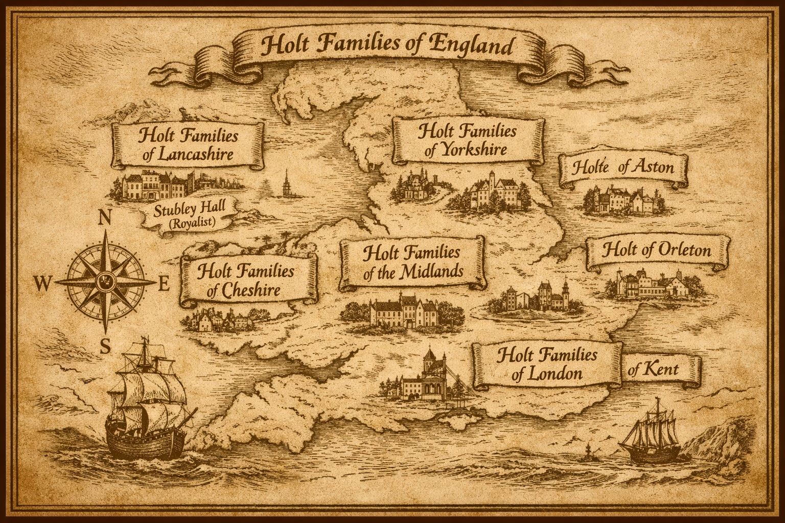

Geographical Holts: Topographic and Locational Origins of the Surname

The surname Holt is deeply rooted in the English landscape. It arises both from topographic features (a wood or grove) and from specific place‑names called Holt, so families who share the surname do not necessarily share a common medieval ancestor. This page introduces those different origins, shows how they appear in records, and explains why Holts are found in distinct regional clusters across England and beyond.
In Old English, holt meant:
- a wood or grove
- a stand of holly
- a thicket or brushwood
- sometimes a small copse on rising ground
The term was widely used across Anglo‑Saxon England, especially in heavily wooded counties. In medieval documents, “a holt” usually referred to a recognisable local landmark rather than a settlement. A person might be described as:
- æt þǣm holte — “at the holt”
- of the holt — “from the wood”
Over time, these descriptive by‑names became hereditary surnames. Many Holt families therefore originally lived near a wood or grove, rather than in a place actually called Holt.
Alongside the topographic meaning, Holt is also a place‑name found in several English counties. Individuals who moved away from these settlements often adopted the place‑name as a surname. Important examples include:
Major settlements named Holt
- Holt, Norfolk
- Holt, Wiltshire
- Holt, Worcestershire
- Holt, Cheshire (near the Welsh border)
- Holt, Dorset
- Holt Heath (Dorset and Worcestershire)
Related or derivative place‑names
- Holton / Holten
- Holton‑le‑Clay
- Holton St Mary
- Holton Heath
- Holtby (Yorkshire)
- Holts / The Holts (hamlets and farmsteads)
These locations represent distinct surname origins. A Holt from Norfolk is not automatically related to a Holt from Lancashire or Cheshire; they may simply share a surname derived from similar woodland features or similarly named settlements.
Although both origins relate to woodland, they produce different genealogical lines.
Topographic Holts
Topographic Holts are those whose surname arose because their ancestors lived near a wood, holly grove or similar natural feature. Because such landscapes were common across England, this form of the surname developed independently in many different places. As a result, topographic Holts usually represent multiple unrelated medieval families who happened to share the same descriptive name.
Locational Holts
Locational Holts trace their surname to a specific settlement named Holt. These place‑names occur in particular counties, and families adopting the surname from them tend to form identifiable regional clusters. Locational Holts are therefore more likely to descend from a single medieval community or a defined group tied to one of these settlements.
The Lancashire Holts, for example, are far more likely to be topographic in origin, whereas many Cheshire Holts often trace back to the village of Holt on the Dee.
Not all Holts share a single English root. The word holt appears in several related linguistic traditions:
- Old English: holt (wood, grove)
- Old Norse: holt (small wood on a hill), influencing northern counties
- Middle English: holte, holty, holten
- Germanic: related to Holz (wood)
This helps explain why the surname appears in:
- the Midlands (Anglo‑Saxon influence)
- the North West (Norse influence)
- German and Scandinavian contexts (separate, parallel origins)
By the 12th–14th centuries, English surnames began to stabilise. Topographic surnames like Holt were often assigned to individuals who:
- lived near a notable wood or grove
- worked in or managed woodland
- were associated with a specific holt used as a boundary marker
These names became hereditary as families remained tied to the same land, or as the name became a fixed identifier in manorial, tax and legal records.
In medieval Lancashire, the surname often appears in forms such as del Holt, showing that it normally derived from a topographical term meaning a wood or copse. One prominent family, the Holts of Stubley near Rochdale, were landowners of some substance from the 14th century onwards. During the 16th and 17th centuries Holt became a more numerous surname, especially in the Salford Hundred.
In the 1642 Protestation Returns more than 160 persons named Holt or Hoult were listed, with the largest numbers in Rochdale parish and many others in Bury, Middleton and Manchester. The plural form Holtes appears only once in the 1642 returns in Manchester, suggesting that the addition of a final “s” was a relatively late development.
Henry Fishwick compiled a useful summary of the surname’s local prominence:
- 1590–1616: Holt was one of the 12 most common surnames in Rochdale.
- 1851: Holt was listed among the 20 most numerous surnames in Rochdale.
- 1895: Holt was the 7th most common surname in Rochdale.
This guide therefore looks at the geographical locations and lineages of the Holt name. While these families share a surname derived from the Old English word holt, they represent distinct genetic and social groups that took root in different parts of the kingdom.
Major Geographical Holt Branches
| Branch | Place Origin | Heraldic Blazon (Description) | Primary Character |
|---|---|---|---|
| Lancashire | Holt, Butterworth. Not all in the country have connected heritage. Distributed mostly around Rochdale, Liverpool and Manchester. Also cadet lines in Hampshire | Argent, on a bend engrailed sable, three fleurs-de-lis of the field. | The Great Gentry/Industrial Dynasty. |
| Warwickshire | Aston was a separate village near a wood | Azure, two bars or. | A distinguished Warwickshire family. Baronets. A prominent landowner with wealth stemming from the wool trade |
| Leicestershire | Holt Hamlet, Medbourne became Nevill Holt, Orleton | Argent, three squirrels sejant gules. | The Banking Holts. |
| Wiltshire | Holt, near Bradford-on-Avon ('Wrindesholt' in 1001) | Medieval chase, private hunting ground owners in 12th Century. | |
| Norfolk | Holt, Norfolk | No known Holt family from Holt. | |
| Yorkshire / Somerset | Whitby | Pioneer Holts in shipping industries, a shipowner. Also cadet line are brewery owners in Somerset. | |
| Denbighshire | Holt, Wrexham | No known Holt family from Holt. | |
| Worcestershire | Holt, hundred of Oswaldslow, near Worcester | 1273 Henry de la Holte. | |
| Dorset | Holt near Wimborne Minster | No known Holt family from Holt. |
Topographical Surnames
Incidence of selected topographical surnames in medieval records, shown as the number of individuals per 10,000 people listed in each source.
| County & Year | Incidence per 10,000 |
|---|---|
| Bedfordshire (1297) | 0 |
| Buckinghamshire (1332) | 0 |
| Lancashire (1332) | 12 |
| Suffolk (1332) | 1 |
| Surrey (1332) | 5 |
| Sussex (1327) | 11 |
| Warwickshire (1332) | 10 |
| Worcestershire (1332) | 23 |
| Yorkshire (1301) | 1 |
Incidence of topographical surnames in early‑modern records, again expressed per 10,000 individuals recorded.
| County / Region | Incidence per 10,000 |
|---|---|
| Buckinghamshire | 1 |
| Dorset | 3 |
| Hertfordshire | 6 |
| Salford Hundred | 97 |
| West Derbyshire & Lonsdale | 6 |
| Norfolk | 3 |
| Oxen | 1 |
| Salop | 2 |
| Suffolk | 3 |
| Surrey | 8 |
| Sussex | 3 |
| Wiltshire | 5 |